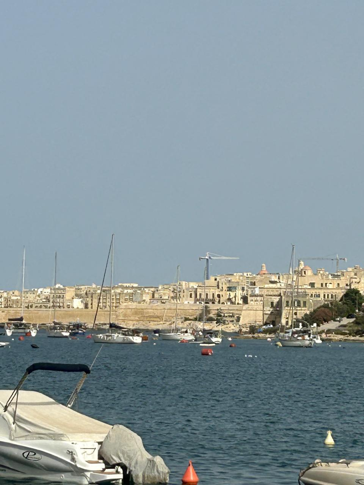

Mediterranean Views
Beautiful landscapes near the Blue Lagoon area.
English studies and Mediterranean culture.

Sliema, Malta (Est. 1987)
The perfect place to practice English while enjoying a sophisticated coffee. A true boutique experience in the heart of Sliema.

Beautiful landscapes near the Blue Lagoon area.

Exploring the ancient architecture and silent cities.

Unique details found while walking through the islands.